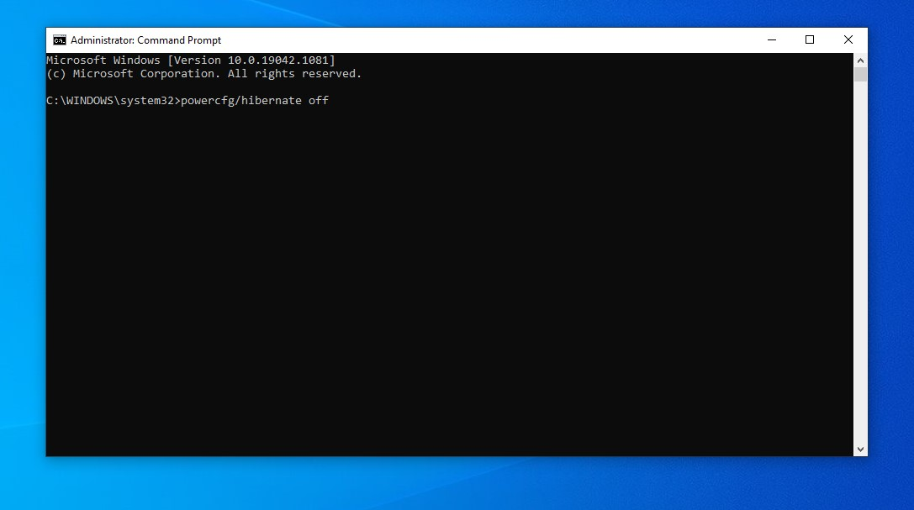
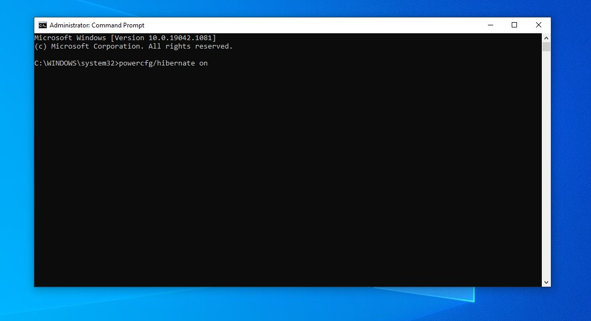

How to ON/OFF Hibernate in Microsoft Window 10
Note: 1. Press Windows button and type CMD, click on run as administrator to open CMD prompt.
2. Type the command: “powercfg/h /type full”, press ENTER to enable hibernate option.
(Now go to START menu and click on power button, the hibernate option is listed there)
3. Type this command to off hibernate: “powercfg/hibernate off”, press ENTER.
4. Type this command to open hibernate: “powercfg/hibernate on”, press ENTER.
